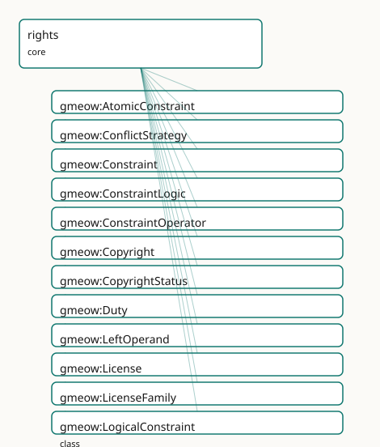

GMEOW Rights & IP Module
- IRI: https://blackcatinformatics.ca/gmeow/slices/rights
- Tier: core
Group: core
What This Slice Covers
This slice owns 204 terms and contributes 319 mapping or projection rows. Use it when its terms match the native fact you want to preserve; use the linkage tables to see how those facts leave GMEOW for consumer vocabularies.
Dependencies
Consumers
- Licensing of every artifact: the ontology's own dual licence, images, software, the mail corpus.
Local Map

Examples
Licensed Dataset
- Source:
slices/core/rights/examples/licensed-dataset.ttl - GMEOW terms:
gmeow:Copyright,gmeow:Dataset,gmeow:Duty,gmeow:License,gmeow:Permission,gmeow:Person,gmeow:Prohibition,gmeow:RightsAction,gmeow:RightsStatement,gmeow:actionAttribute - External prefixes:
owl,xsd
# SPDX-FileCopyrightText: 2026 Blackcat Informatics® Inc. <paudley@blackcatinformatics.ca>
# SPDX-License-Identifier: CC-BY-4.0
#
# Worked example: rights are flat-first, promoted on demand (, P4). The
# common case is a single gmeow:hasLicense + gmeow:hasCopyright edge — no relator
# needed. Only when the deontic RULES matter (who may do what, under which duty,
# what is forbidden) is the flat form PROMOTED to a gmeow:RightsStatement bearing
# the ODRL-superset trio: gmeow:Permission / gmeow:Prohibition / gmeow:Duty, each
# over an open gmeow:RightsAction value. A licence is itself an Agreement, aligned
# to CC/ODRL by reference (spdxLicenseId, licenseFamily) — never owl:sameAs (P5).
@prefix gmeow: <https://blackcatinformatics.ca/gmeow/> .
@prefix ex: <https://blackcatinformatics.ca/gmeow/examples/rights/> .
@prefix rdfs: <http://www.w3.org/2000/01/rdf-schema#> .
@prefix xsd: <http://www.w3.org/2001/XMLSchema#> .
ex:researcher a gmeow:Person ; gmeow:name "Dr. Mara Okafor"@en .
# --- The asset, with the FLAT-first rights edges (the common case) plus a
# promoted RightsStatement because permissions/prohibitions/duties are needed.
ex:dataset a gmeow:Dataset ;
gmeow:title "Coastal Bird Survey 2026"@en ;
gmeow:hasCopyright ex:copyright ;
gmeow:hasLicense ex:ccbync ;
gmeow:hasRightsStatement ex:rights .
# --- Flat copyright fact.
ex:copyright a gmeow:Copyright ;
gmeow:copyrightWork ex:dataset ;
gmeow:copyrightHolder ex:researcher ;
gmeow:copyrightYear "2026"^^xsd:gYear ;
gmeow:copyrightStatus gmeow:copyrightStatusInCopyright .
# --- The licence: an Agreement, aligned to CC by REFERENCE (P5), not equated.
ex:ccbync a gmeow:License ;
rdfs:label "CC BY-NC 4.0"@en ;
gmeow:licensor ex:researcher ;
gmeow:licensedWork ex:dataset ;
gmeow:licenseFamily gmeow:licenseFamilyCC ;
gmeow:spdxLicenseId "CC-BY-NC-4.0" .
# --- Promoted form: the deontic rules the flat edge cannot carry.
ex:rights a gmeow:RightsStatement ;
gmeow:statementAbout ex:dataset ;
gmeow:hasPermission ex:permReproduce ;
gmeow:hasProhibition ex:prohCommercial .
# --- Permission to reproduce, but only if the attribution DUTY is discharged.
ex:permReproduce a gmeow:Permission ;
gmeow:ruleAction gmeow:actionReproduce ;
gmeow:hasDuty ex:dutyAttribute .
ex:dutyAttribute a gmeow:Duty ;
gmeow:ruleAction gmeow:actionAttribute .
# --- Prohibition: no commercial use (the NC of CC BY-NC).
ex:prohCommercial a gmeow:Prohibition ;
gmeow:ruleAction gmeow:actionCommercialize .
Terms
Classes
| Term | Label | Definition |
|---|---|---|
gmeow:AtomicConstraint |
Atomic Constraint | A single ODRL constraint comparison: a gmeow:leftOperand (the dimension tested), a gmeow:constraintOperator (the comparison), and a gmeow:rightOperand (the val... |
gmeow:ConflictStrategy |
Conflict Strategy | A policy conflict-resolution strategy — the ODRL conflict values perm / prohibit / invalid. |
gmeow:Constraint |
Constraint | The abstract base of a condition on a rights rule (odrl:Constraint) — specialised by gmeow:AtomicConstraint (a leftOperand / operator / rightOperand comparison... |
gmeow:ConstraintLogic |
Constraint Logic | The boolean operator of a logical constraint — odrl:and / odrl:or / odrl:xone (exactly one) / odrl:andSequence (ordered conjunction). |
gmeow:ConstraintOperator |
Constraint Operator | The comparison operator of an atomic constraint — the ODRL operator vocabulary (eq, neq, lt, lteq, gt, gteq, isPartOf, isA, isAnyOf, …). |
gmeow:Copyright |
Copyright | The reified copyright over a work — binding the work, its holder(s), the copyright year and the human-readable notice. Its status (in-copyright, public-domain,... |
gmeow:CopyrightStatus |
Copyright Status | The copyright standing of a work — a VALUE aligned to the RightsStatements.org standardized statements and PREMIS copyright status. Open: a finer-grained state... |
gmeow:Duty |
Duty | A rule that obliges the discharge of a gmeow:RightsAction (e.g. attribute, share-alike, obtain-consent) as a condition of a permission (odrl:Duty / odrl:obliga... |
gmeow:LeftOperand |
Left Operand | The dimension an atomic constraint tests — an OPEN value vocabulary mirroring the ODRL leftOperand vocabulary (dateTime, spatial, count, purpose, recipient, in... |
gmeow:License |
License | A licence granting rights in a work — modelled as a gmeow:Agreement (it binds licensor and licensee and creates permissions / duties). The canonical superset o... |
gmeow:LicenseFamily |
License Family | The family of a licence — public-domain, Creative Commons, permissive, copyleft, proprietary, or dual. An OPEN value vocabulary; the ontology-side reflection o... |
gmeow:LogicalConstraint |
Logical Constraint | A boolean combination of constraints under a gmeow:constraintLogic operator (odrl:and / odrl:or / odrl:xone / odrl:andSequence) over its gmeow:logicConstraintM... |
gmeow:Mark |
Mark | A brand / sign / name / logo that can be trademarked — the thing a gmeow:Trademark protects (schema:Brand). An information object: it may itself bear a gmeow:R... |
gmeow:Permission |
Permission | A rule that grants the ability to exercise a gmeow:RightsAction over the governed asset (odrl:Permission). Its required duties ride gmeow:hasDuty. |
gmeow:PrivacyNotice |
Privacy Notice | A human- or machine-readable privacy notice informing data subjects about the processing of their personal data — the information-object counterpart of a dpv:P... |
gmeow:Prohibition |
Prohibition | A rule that forbids the exercise of a gmeow:RightsAction over the governed asset (odrl:Prohibition). |
gmeow:RightsAction |
Rights Action | The kind of action a rights rule regulates — a VALUE, never a rule subclass. The set is open (ODRL's action vocabulary + CC REL); an action not among the seed... |
gmeow:RightsStatement |
Rights Statement | A reified, machine-readable statement of the rights situation of an entity — an observation in the universal claim stack. Who may do what with it, under... |
gmeow:RightsType |
Rights Type | A kind of intellectual-property right — an OPEN value vocabulary (copyright, trademark, patent, industrial design, trade secret, related rights, moral rights,... |
gmeow:Rule |
Rule | The abstract base of a deontic rule in a rights statement — it binds a regulated gmeow:RightsAction to an optional target asset and assignee. Specialised by gm... |
gmeow:Trademark |
Trademark | The reified trademark right over a mark — binding the mark, its holder, the registration number and the ™/®/status value. Aligned (by reference) to schema:Bran... |
gmeow:TrademarkStatus |
Trademark Status | The registration status of a trademark — a VALUE: unregistered (™), registered (®), pending, expired, or cancelled. Open vocabulary. |
Properties
| Term | Label | Definition |
|---|---|---|
gmeow:acquireLicensePage |
acquire license page | A page where a licence to use the asset may be acquired (schema:acquireLicensePage). |
gmeow:attributionText |
attribution text | The credit line to display when reusing the asset (schema:creditText; cc:attributionName) — e.g. "Photo by Jane Doe / CC BY 4.0". The structured holder is gmeo... |
gmeow:attributionUrl |
attribution url | The URL the attribution credit should link to when reusing the asset (cc:attributionURL). |
gmeow:conditionsOfAccess |
conditions of access | Human-readable conditions under which the asset may be accessed (schema:conditionsOfAccess), e.g. "on-site access only". |
gmeow:conflictStrategy |
conflict strategy | How a rights statement resolves a permission/prohibition conflict over the same action (odrl:conflict): gmeow:conflictPerm (permission wins), gmeow:conflictPro... |
gmeow:constraintLogic |
constraint logic | The boolean operator combining a logical constraint's members — one of the gmeow:ConstraintLogic values (odrl:and / or / xone / andSequence). Functional. |
gmeow:constraintOperator |
constraint operator | The comparison operator of an atomic constraint — one of the gmeow:ConstraintOperator values (odrl:operator). Functional. |
gmeow:copyrightHolder |
copyright holder | The agent that holds a copyright (schema:copyrightHolder; dcterms:rightsHolder). A specialisation of gmeow:wasAttributedTo — the canonical rights-holder attrib... |
gmeow:copyrightNotice |
copyright notice | The human-readable copyright notice (schema:copyrightNotice), e.g. "© 2026 Blackcat Informatics Inc." |
gmeow:copyrightStatus |
copyright status | The copyright status of a work — one of the gmeow:CopyrightStatus values (in-copyright / public-domain / no-known-copyright / not-evaluated), aligned to Rights... |
gmeow:copyrightWork |
copyright work | The work a copyright protects. Functional: one copyright relator is about one work. |
gmeow:copyrightYear |
copyright year | The year copyright was asserted (schema:copyrightYear). Typed rdfs:Literal in the TBox to stay OWL 2 DL (xsd:gYear is not an OWL 2 datatype); data carries an x... |
gmeow:hasCopyright |
has copyright | Relates a work to its reified copyright. |
gmeow:hasDataController |
has data controller | The data controller responsible for processing personal data under a rights statement — the agent that determines the purposes and means of processing. |
gmeow:hasDataSubject |
has data subject | The data subject whose personal data is governed by a rights statement — the individual about whom personal data is processed. Not a subproperty of gmeow:hasPa... |
gmeow:hasDuty |
has duty | Relates a rights statement (or a permission) to a duty / obligation that must be discharged (an odrl:duty / odrl:obligation rule). The domain is the union of g... |
gmeow:hasLicense |
has license | Relates an entity (a work, dataset, software project, …) to a licence granting rights in it (dcterms:license; schema:license). Named gmeow:hasLicense — gmeow:l... |
gmeow:hasPermission |
has permission | Relates a rights statement to a permission it grants (an odrl:permission rule). |
gmeow:hasPrivacyNotice |
has privacy notice | Relates an entity or rights statement to its privacy notice. Domain-free: a notice may be attached to a RightsStatement, a Licence, or directly to the governed... |
gmeow:hasProhibition |
has prohibition | Relates a rights statement to a prohibition it imposes (an odrl:prohibition rule). |
gmeow:hasRightsStatement |
has rights statement | Relates an entity (typically a gmeow:CreativeWork or gmeow:InformationObject) to a machine-readable rights statement that governs it — the GMEOW analogue of od... |
gmeow:hasTrademark |
has trademark | Relates an entity (a mark, product or organization) to a trademark right over it. |
gmeow:isAccessibleForFree |
is accessible for free | Whether the asset is accessible without payment (schema:isAccessibleForFree). |
gmeow:isOsiApproved |
is OSI approved | Whether the licence is approved by the Open Source Initiative (spdx:isOsiApproved). |
gmeow:leftOperand |
left operand | The dimension an atomic constraint tests — one of the gmeow:LeftOperand values (odrl:leftOperand). Functional. |
gmeow:licenseFamily |
license family | The family a licence belongs to — one of the gmeow:LicenseFamily values. Functional. |
gmeow:licenseText |
license text | The full legal text of a licence (spdx:licenseText). |
gmeow:licensedWork |
licensed work | The work a licence grants rights in. Functional. |
gmeow:licensee |
licensee | The party receiving a licence (odrl:assignee). A specialisation of gmeow:hasParty. Absent on an open / public licence offered to everyone. |
gmeow:licensor |
licensor | The party granting a licence (odrl:assigner). A specialisation of gmeow:hasParty. Non-functional: a licence may be granted jointly. |
gmeow:logicConstraintMember |
logic constraint member | A member constraint combined by a logical constraint (odrl:operand). Non-functional: a logical constraint combines two or more. |
gmeow:markText |
mark text | The textual form of a mark (the brand name / word mark), e.g. "Blackcat Informatics". |
gmeow:registrationNumber |
registration number | The registry registration number of a trademark (e.g. a CIPO / USPTO / WIPO number). |
gmeow:rightOperand |
right operand | The value an atomic constraint tests against (odrl:rightOperand), e.g. "2030-01-01", "EU", "5". For an IRI-valued operand use gmeow:rightOperandReference. |
gmeow:rightOperandReference |
right operand reference | An IRI-valued right operand (odrl:rightOperandReference) — e.g. a place, party, or vocabulary individual the constraint tests against. |
gmeow:rightsType |
rights type | The kind(s) of intellectual-property right a statement concerns — one of the open gmeow:RightsType values (copyright, trademark, patent, industrial design, tra... |
gmeow:ruleAction |
rule action | The regulated action of a rule — one of the open gmeow:RightsAction values (odrl:action). Functional: a rule regulates exactly one action; several actions are... |
gmeow:ruleAssignee |
rule assignee | The party a rule applies to (odrl:assignee). Absent means the rule applies to everyone (an open offer to the public). |
gmeow:ruleConsequence |
rule consequence | A duty triggered when a rule is unfulfilled or violated — the ODRL consequence (on a duty) / remedy (on a prohibition). The deontic chaining that makes a polic... |
gmeow:ruleConstraint |
rule constraint | Relates a rule to a constraint that conditions it (odrl:constraint). A permission/prohibition/duty holds only when all its constraints are satisfied. |
gmeow:ruleTarget |
rule target | The asset a rule regulates (odrl:target). Optional; absent when the rule inherits its target from the enclosing rights statement's gmeow:statementAbout. |
gmeow:spdxLicenseId |
SPDX license id | The SPDX License List short identifier of a licence — the canonical machine-readable licence id (e.g. "MIT", "Apache-2.0", "CC-BY-4.0", "GPL-3.0-only"). The br... |
gmeow:spdxLicenseName |
SPDX license name | The full SPDX License List name of a licence (spdx:name), e.g. "Apache License 2.0". |
gmeow:statementAbout |
statement about | The asset a rights statement governs — the ODRL target. Usually the inverse of gmeow:hasRightsStatement; asserted on the relator so the statement is self-conta... |
gmeow:trademarkHolder |
trademark holder | The agent that holds a trademark (the proprietor). A specialisation of gmeow:wasAttributedTo. Non-functional: a mark may be jointly held. |
gmeow:trademarkMark |
trademark mark | The mark a trademark protects. Functional. |
gmeow:trademarkStatus |
trademark status | The status of a trademark — one of the gmeow:TrademarkStatus values (unregistered ™ / registered ® / pending / expired / cancelled). Functional. |
gmeow:usageInfo |
usage info | Human-readable supplementary usage / licensing information (schema:usageInfo). |
Individuals
| Term | Label | Definition |
|---|---|---|
gmeow:actionAcceptTracking |
accept tracking | Accept that use of the asset may be tracked (odrl:acceptTracking). |
gmeow:actionAggregate |
aggregate | Use the asset within an aggregation with other assets (odrl:aggregate). |
gmeow:actionAnnotate |
annotate | Add explanatory notations to the asset (odrl:annotate). |
gmeow:actionAnonymize |
anonymize | Anonymise identifying information in the asset (odrl:anonymize). |
gmeow:actionArchive |
archive | Store the asset for long-term preservation (odrl:archive). |
gmeow:actionAttribute |
attribute | Credit the rights holder (odrl:attribute; cc:Attribution) — typically the action of an attribution duty. |
gmeow:actionCommercialize |
commercialize | Use the asset for commercial advantage (odrl:commercialize; cc:CommercialUse). |
gmeow:actionCompensate |
compensate | Compensate the assigner by payment (odrl:compensate) — typically a duty. |
gmeow:actionConcurrentUse |
concurrent use | Permit a limited number of concurrent uses (odrl:concurrentUse). |
gmeow:actionDelete |
delete | Permanently remove all copies of the asset (odrl:delete). |
gmeow:actionDerive |
derive / modify | Create derivative / adapted works from the asset (odrl:derive; cc:DerivativeWorks). |
gmeow:actionDigitize |
digitize | Produce a digital copy of a physical asset (odrl:digitize). |
gmeow:actionDisplay |
display | Display the asset, e.g. on screen (odrl:display). |
gmeow:actionDistribute |
distribute | Distribute / publish copies of the asset (odrl:distribute; cc:Distribution). |
gmeow:actionEnsureExclusivity |
ensure exclusivity | Guarantee exclusivity of the granted rights (odrl:ensureExclusivity) — a duty. |
gmeow:actionExecute |
execute | Run / execute the asset (e.g. software) (odrl:execute). |
gmeow:actionExtract |
extract | Extract part of the asset (odrl:extract) — e.g. for text/data mining. |
gmeow:actionGive |
give | Transfer ownership of the asset to another party without compensation (odrl:give). |
gmeow:actionGrantUse |
grant use | Grant the use of the asset to third parties (odrl:grantUse). |
gmeow:actionInclude |
include | Include other related assets in the asset (odrl:include). |
gmeow:actionIndex |
index | Record the asset in an index (odrl:index). |
gmeow:actionInform |
inform | Inform a party that an action has occurred (odrl:inform) — a duty. |
gmeow:actionInstall |
install | Install the asset on a device (odrl:install). |
gmeow:actionLease |
lease | Make the asset available for use for a period in return for payment (odrl:lease). |
gmeow:actionLend |
lend | Make the asset available for temporary use without transferring ownership (odrl:lend). |
gmeow:actionModify |
modify | Change existing content of the asset (odrl:modify). |
gmeow:actionMove |
move | Move the asset from one digital location to another, deleting the original (odrl:move). |
gmeow:actionNextPolicy |
next policy | Apply a subsequent policy to a re-distributed asset (odrl:nextPolicy). |
gmeow:actionObtainConsent |
obtain consent | Obtain the holder's prior consent before exercising a permission (odrl:obtainConsent). |
gmeow:actionPlay |
play | Render the asset as audio/video (odrl:play). |
gmeow:actionPresent |
present / display | Publicly present, perform or display the asset (odrl:present). |
gmeow:actionPrint |
Create a hard-copy rendition of the asset (odrl:print). | |
gmeow:actionProcessPersonalData |
process personal data | Process personal data about a data subject — the privacy-regulated action (aligned to dpv:Processing and odrl:use). |
gmeow:actionRead |
read | Obtain data from the asset (odrl:read). |
gmeow:actionReproduce |
reproduce | Make copies of the asset (odrl:reproduce; cc:Reproduction). |
gmeow:actionRetainNotice |
retain notice | Preserve copyright / licence notices (cc:Notice) — typically the action of a notice duty. |
gmeow:actionReviewPolicy |
review policy | Review the policy applicable to the asset (odrl:reviewPolicy) — a duty. |
gmeow:actionSell |
sell | Transfer ownership of the asset in return for payment (odrl:sell). |
gmeow:actionShareAlike |
share alike | Distribute derivatives under the same licence (odrl:shareAlike; cc:ShareAlike) — typically the action of a share-alike duty. |
gmeow:actionStream |
stream | Deliver the asset as a real-time stream (odrl:stream). |
gmeow:actionSynchronize |
synchronize | Use the asset in timed relation with another asset (odrl:synchronize). |
gmeow:actionTextToSpeech |
text to speech | Render text of the asset as synthesized speech (odrl:textToSpeech). |
gmeow:actionTransfer |
transfer | Transfer ownership of the asset to another party (odrl:transfer). |
gmeow:actionTransform |
transform | Convert the asset into a different format (odrl:transform). |
gmeow:actionTranslate |
translate | Translate the asset into another language (odrl:translate). |
gmeow:actionUninstall |
uninstall | Remove an installed asset from a device (odrl:uninstall). |
gmeow:actionUse |
use | Use the asset (the broad odrl:use action). |
gmeow:actionWatermark |
watermark | Apply a watermark to the asset (odrl:watermark) — a duty. |
gmeow:conflictInvalid |
policy void on conflict | The ODRL invalid conflict-resolution strategy (odrl:invalid). |
gmeow:conflictPerm |
permission wins | The ODRL perm conflict-resolution strategy (odrl:perm). |
gmeow:conflictProhibit |
prohibition wins | The ODRL prohibit conflict-resolution strategy (odrl:prohibit). |
gmeow:copyrightStatusInCopyright |
in copyright | The work is protected by copyright (RightsStatements.org InC). |
gmeow:copyrightStatusInCopyrightEducationalUse |
in copyright — educational use permitted | In copyright, educational use permitted (RightsStatements.org InC-EDU). |
gmeow:copyrightStatusInCopyrightEuOrphanWork |
in copyright — EU orphan work | In copyright, an EU orphan work (RightsStatements.org InC-OW-EU). |
gmeow:copyrightStatusInCopyrightNonCommercialUse |
in copyright — non-commercial use permitted | In copyright, non-commercial use permitted (RightsStatements.org InC-NC). |
gmeow:copyrightStatusInCopyrightRightsholderUnlocatable |
in copyright — rights-holder unlocatable | In copyright, rights-holder(s) unlocatable or unidentifiable (RightsStatements.org InC-RUU). |
gmeow:copyrightStatusNoCopyrightContractualRestrictions |
no copyright — contractual restrictions | No copyright, contractual restrictions apply (RightsStatements.org NoC-CR). |
gmeow:copyrightStatusNoCopyrightNonCommercialOnly |
no copyright — non-commercial use only | No copyright, non-commercial use only (RightsStatements.org NoC-NC). |
gmeow:copyrightStatusNoCopyrightOtherLegalRestrictions |
no copyright — other known legal restrictions | No copyright, other known legal restrictions (RightsStatements.org NoC-OKLR). |
gmeow:copyrightStatusNoCopyrightUnitedStates |
no copyright — United States | No copyright in the United States (RightsStatements.org NoC-US). |
gmeow:copyrightStatusNoKnownCopyright |
no known copyright | No copyright is known to subsist, after evaluation (RightsStatements.org NKC). |
gmeow:copyrightStatusNotEvaluated |
copyright not evaluated | The copyright status has not been evaluated (RightsStatements.org CNE). |
gmeow:copyrightStatusPublicDomain |
public domain | The work is in the public domain (the CC public-domain mark; RightsStatements.org NoC-related). |
gmeow:copyrightStatusUndetermined |
copyright undetermined | Copyright undetermined (RightsStatements.org UND). |
gmeow:leftOpAbsolutePosition |
absolute position | The ODRL absolutePosition constraint dimension (odrl:absolutePosition). |
gmeow:leftOpAbsoluteSize |
absolute size | The ODRL absoluteSize constraint dimension (odrl:absoluteSize). |
gmeow:leftOpAbsoluteSpatialPosition |
absolute spatial position | The ODRL absoluteSpatialPosition constraint dimension (odrl:absoluteSpatialPosition). |
gmeow:leftOpAbsoluteTemporalPosition |
absolute temporal position | The ODRL absoluteTemporalPosition constraint dimension (odrl:absoluteTemporalPosition). |
gmeow:leftOpCount |
use count | The ODRL count constraint dimension (odrl:count). |
gmeow:leftOpDateTime |
date/time | The ODRL dateTime constraint dimension (odrl:dateTime). |
gmeow:leftOpDelayPeriod |
delay period | The ODRL delayPeriod constraint dimension (odrl:delayPeriod). |
gmeow:leftOpDeliveryChannel |
delivery channel | The ODRL deliveryChannel constraint dimension (odrl:deliveryChannel). |
gmeow:leftOpDevice |
device | The ODRL device constraint dimension (odrl:device). |
gmeow:leftOpElapsedTime |
elapsed time | The ODRL elapsedTime constraint dimension (odrl:elapsedTime). |
gmeow:leftOpEvent |
event | The ODRL event constraint dimension (odrl:event). |
gmeow:leftOpFileFormat |
file format | The ODRL fileFormat constraint dimension (odrl:fileFormat). |
gmeow:leftOpIndustry |
industry | The ODRL industry constraint dimension (odrl:industry). |
gmeow:leftOpLanguage |
language | The ODRL language constraint dimension (odrl:language). |
gmeow:leftOpMedia |
media context | The ODRL media constraint dimension (odrl:media). |
gmeow:leftOpMeteredTime |
metered time | The ODRL meteredTime constraint dimension (odrl:meteredTime). |
gmeow:leftOpPayAmount |
pay amount | The ODRL payAmount constraint dimension (odrl:payAmount). |
gmeow:leftOpPercentage |
percentage | The ODRL percentage constraint dimension (odrl:percentage). |
gmeow:leftOpProduct |
product context | The ODRL product constraint dimension (odrl:product). |
gmeow:leftOpPurpose |
purpose | The ODRL purpose constraint dimension (odrl:purpose). |
gmeow:leftOpRecipient |
recipient | The ODRL recipient constraint dimension (odrl:recipient). |
gmeow:leftOpRelativePosition |
relative position | The ODRL relativePosition constraint dimension (odrl:relativePosition). |
gmeow:leftOpRelativeSize |
relative size | The ODRL relativeSize constraint dimension (odrl:relativeSize). |
gmeow:leftOpRelativeSpatialPosition |
relative spatial position | The ODRL relativeSpatialPosition constraint dimension (odrl:relativeSpatialPosition). |
gmeow:leftOpRelativeTemporalPosition |
relative temporal position | The ODRL relativeTemporalPosition constraint dimension (odrl:relativeTemporalPosition). |
gmeow:leftOpResolution |
rendition resolution | The ODRL resolution constraint dimension (odrl:resolution). |
gmeow:leftOpSpatial |
spatial region | The ODRL spatial constraint dimension (odrl:spatial). |
gmeow:leftOpSpatialCoordinates |
spatial coordinates | The ODRL spatialCoordinates constraint dimension (odrl:spatialCoordinates). |
gmeow:leftOpSystem |
system | The ODRL system constraint dimension (odrl:system). |
gmeow:leftOpSystemDevice |
system device | The ODRL systemDevice constraint dimension (odrl:systemDevice). |
gmeow:leftOpTimeInterval |
recurring time interval | The ODRL timeInterval constraint dimension (odrl:timeInterval). |
gmeow:leftOpUnitOfCount |
unit of count | The ODRL unitOfCount constraint dimension (odrl:unitOfCount). |
gmeow:leftOpVersion |
asset version | The ODRL version constraint dimension (odrl:version). |
gmeow:leftOpVirtualLocation |
virtual location | The ODRL virtualLocation constraint dimension (odrl:virtualLocation). |
gmeow:licenseFamilyCC |
Creative Commons | A Creative Commons licence (CC BY, CC BY-SA, CC BY-NC, …). |
gmeow:licenseFamilyCopyleft |
copyleft | A copyleft / share-alike licence (the GPL family, EUPL, CC BY-SA, ODbL). |
gmeow:licenseFamilyDual |
dual-licensed | Offered under more than one licence at the recipient's choice (e.g. open plus commercial). |
gmeow:licenseFamilyPermissive |
permissive | A permissive software/data licence (MIT, BSD, Apache-2.0, ODC-BY). |
gmeow:licenseFamilyProprietary |
proprietary | A proprietary / all-rights-reserved licence. |
gmeow:licenseFamilyPublicDomain |
public domain | A public-domain dedication / mark (CC0, the public-domain mark). |
gmeow:logicAnd |
and (all) | The ODRL and logical-constraint operator (odrl:and). |
gmeow:logicAndSequence |
and (ordered) | The ODRL andSequence logical-constraint operator (odrl:andSequence). |
gmeow:logicOr |
or (any) | The ODRL or logical-constraint operator (odrl:or). |
gmeow:logicXone |
exactly one | The ODRL xone logical-constraint operator (odrl:xone). |
gmeow:operatorEq |
equal to | The ODRL eq comparison operator (odrl:eq). |
gmeow:operatorGt |
greater than | The ODRL gt comparison operator (odrl:gt). |
gmeow:operatorGteq |
greater than or equal to | The ODRL gteq comparison operator (odrl:gteq). |
gmeow:operatorHasPart |
has part | The ODRL hasPart comparison operator (odrl:hasPart). |
gmeow:operatorIsA |
is a | The ODRL isA comparison operator (odrl:isA). |
gmeow:operatorIsAllOf |
is all of | The ODRL isAllOf comparison operator (odrl:isAllOf). |
gmeow:operatorIsAnyOf |
is any of | The ODRL isAnyOf comparison operator (odrl:isAnyOf). |
gmeow:operatorIsNoneOf |
is none of | The ODRL isNoneOf comparison operator (odrl:isNoneOf). |
gmeow:operatorIsPartOf |
is part of | The ODRL isPartOf comparison operator (odrl:isPartOf). |
gmeow:operatorLt |
less than | The ODRL lt comparison operator (odrl:lt). |
gmeow:operatorLteq |
less than or equal to | The ODRL lteq comparison operator (odrl:lteq). |
gmeow:operatorNeq |
not equal to | The ODRL neq comparison operator (odrl:neq). |
gmeow:rightsTypeCopyright |
copyright | The copyright kind of intellectual-property right (wd:Q1297822). |
gmeow:rightsTypeDatabaseRight |
database right | The database right kind of intellectual-property right (wd:Q688416). |
gmeow:rightsTypeIndustrialDesign |
industrial design right | The industrial design right kind of intellectual-property right (wd:Q252799). |
gmeow:rightsTypeMoralRights |
moral rights | The moral rights kind of intellectual-property right (wd:Q1057599). |
gmeow:rightsTypePatent |
patent | The patent kind of intellectual-property right (wd:Q253623). |
gmeow:rightsTypePlantBreedersRights |
plant breeders' rights | The plant breeders' rights kind of intellectual-property right (wd:Q695112). |
gmeow:rightsTypeRelatedRights |
related rights | The related rights kind of intellectual-property right (wd:Q489344). |
gmeow:rightsTypeTradeSecret |
trade secret | The trade secret kind of intellectual-property right (wd:Q602938). |
gmeow:rightsTypeTrademark |
trademark | The trademark kind of intellectual-property right (wd:Q167270). |
gmeow:trademarkStatusCancelled |
cancelled | A registration that has been cancelled / invalidated. |
gmeow:trademarkStatusExpired |
expired | A registration that has lapsed / expired (retained, not deleted — Principle 10; gmeow:validUntil records when). |
gmeow:trademarkStatusPending |
pending | A trademark application pending registration. |
gmeow:trademarkStatusRegistered |
registered (®) | A registered trademark, asserted with the ® symbol. |
gmeow:trademarkStatusUnregistered |
unregistered (™) | An unregistered common-law trademark, asserted with the ™ symbol. |
Linkages
- Rows: 319
- Projection profiles:
cc,dcat,dcterms,oai_dc,odrl,schema-org,spdx - External vocabularies:
cc,ccpd,dc,dcterms,dpv,ladm,ma,odrl,premis,rdf,rstmt,schema,sosa,spdx,wd
| Source | Kind | Profile | Predicate/Relation | Target | Evidence |
|---|---|---|---|---|---|
gmeow:Constraint |
equivalence | - |
skos:closeMatch | odrl:Constraint | gmeow-rights.sssom.tsv; gmeow:eqRights069; confidence 0.85 |
gmeow:Constraint |
equivalence | - |
skos:relatedMatch | premis:restriction | gmeow-rights.sssom.tsv; gmeow:eqRights197; confidence 0.5 |
gmeow:Copyright |
equivalence | - |
skos:closeMatch | premis:Copyright | gmeow-rights.sssom.tsv; gmeow:eqRights192; confidence 0.7 |
gmeow:Copyright |
equivalence | - |
skos:closeMatch | wd:Q1297822 | gmeow-wikidata.sssom.tsv; gmeow:eqWikidata006; confidence 0.8 |
gmeow:Duty |
equivalence | - |
skos:closeMatch | odrl:Duty | gmeow-rights.sssom.tsv; gmeow:eqRights013; confidence 0.85 |
gmeow:License |
equivalence | - |
skos:closeMatch | cc:License | gmeow-rights.sssom.tsv; gmeow:eqRights038; confidence 0.8 |
gmeow:License |
equivalence | - |
skos:closeMatch | dcterms:LicenseDocument | gmeow-rights.sssom.tsv; gmeow:eqRights020; confidence 0.8 |
gmeow:License |
equivalence | - |
skos:closeMatch | odrl:Offer | gmeow-rights.sssom.tsv; gmeow:eqRights016; confidence 0.6 |
gmeow:License |
equivalence | - |
skos:closeMatch | premis:License | gmeow-rights.sssom.tsv; gmeow:eqRights193; confidence 0.7 |
gmeow:License |
equivalence | - |
skos:closeMatch | spdx:License | gmeow-rights.sssom.tsv; gmeow:eqRights061; confidence 0.8 |
gmeow:License |
equivalence | - |
skos:closeMatch | spdx:ListedLicense | gmeow-rights.sssom.tsv; gmeow:eqRights188; confidence 0.7 |
gmeow:License |
equivalence | - |
skos:closeMatch | wd:Q79719 | gmeow-wikidata.sssom.tsv; gmeow:eqWikidata008; confidence 0.8 |
gmeow:LogicalConstraint |
equivalence | - |
skos:closeMatch | odrl:LogicalConstraint | gmeow-rights.sssom.tsv; gmeow:eqRights070; confidence 0.85 |
gmeow:Mark |
equivalence | - |
skos:closeMatch | schema:Brand | gmeow-rights.sssom.tsv; gmeow:eqRights033; confidence 0.8 |
gmeow:Mark |
equivalence | - |
skos:closeMatch | wd:Q431289 | gmeow-wikidata.sssom.tsv; gmeow:eqWikidata009; confidence 0.75 |
gmeow:Permission |
equivalence | - |
skos:closeMatch | odrl:Permission | gmeow-rights.sssom.tsv; gmeow:eqRights011; confidence 0.85 |
gmeow:Permission |
equivalence | - |
skos:relatedMatch | premis:allows | gmeow-rights.sssom.tsv; gmeow:eqRights195; confidence 0.55 |
gmeow:Permission |
equivalence | - |
skos:relatedMatch | schema:DigitalDocumentPermission | gmeow-rights.sssom.tsv; gmeow:eqRights186; confidence 0.5 |
gmeow:PrivacyNotice |
equivalence | - |
skos:closeMatch | dpv:PrivacyNotice | gmeow-privacy.sssom.tsv; gmeow:eqPrivacy009; confidence 0.85 |
gmeow:PrivacyNotice |
equivalence | - |
skos:closeMatch | schema:PrivacyPolicy | gmeow-privacy.sssom.tsv; gmeow:eqPrivacy010; confidence 0.8 |
gmeow:Prohibition |
equivalence | - |
skos:closeMatch | odrl:Prohibition | gmeow-rights.sssom.tsv; gmeow:eqRights012; confidence 0.85 |
gmeow:Prohibition |
equivalence | - |
skos:relatedMatch | premis:restriction | gmeow-rights.sssom.tsv; gmeow:eqRights196; confidence 0.55 |
gmeow:RightsStatement |
equivalence | - |
skos:relatedMatch | dcterms:RightsStatement | gmeow-rights.sssom.tsv; gmeow:eqRights022; confidence 0.6 |
gmeow:RightsStatement |
equivalence | - |
skos:closeMatch | ladm:LA_RRR | gmeow-places.sssom.tsv; gmeow:eqPlaces204; confidence 0.85 |
| ... | ... | ... | ... | ... | 295 more rows |
Guide
Rights — alignment & projection reference
The alignment and projection companion to the rights doctrine.
Everything here is authored once in mapping-dsl/ and generated by
gmeow compile-mappings (Principle 4); nothing in mappings/, projections/, or
queries/projections/ is hand-edited.
Terms
| Term | Kind | Role |
|---|---|---|
gmeow:RightsStatement |
class (gufo:Relator) |
the machine-readable rights situation of an asset (the ODRL Policy idea) |
gmeow:Copyright |
class (gufo:Relator) |
copyright (work × holder × year × notice × status) |
gmeow:License |
class (gufo:SubKind ⊑ gmeow:Agreement) |
a licence as an agreement |
gmeow:Trademark / gmeow:Mark |
class (gufo:Relator) / class (⊑ gmeow:InformationObject) |
the trademark right / the mark it protects |
gmeow:Rule → gmeow:Permission / gmeow:Prohibition / gmeow:Duty |
classes (gufo:Relator) |
the ODRL deontic rule trio |
gmeow:RightsAction |
value vocabulary (gufo:QualityValue) |
the regulated action (reproduce, distribute, derive, …) |
gmeow:LicenseFamily / gmeow:TrademarkStatus / gmeow:CopyrightStatus |
value vocabularies | open status / family values |
gmeow:hasLicense / gmeow:hasCopyright / gmeow:hasTrademark / gmeow:hasRightsStatement |
object properties | flat-first attach points |
gmeow:copyrightHolder / gmeow:trademarkHolder |
object properties (⊑ gmeow:wasAttributedTo) |
holder attribution |
gmeow:licensor / gmeow:licensee |
object properties (⊑ gmeow:hasParty) |
licence parties |
gmeow:spdxLicenseId |
datatype property | the SPDX License List short identifier |
gmeow:attributionText |
datatype property | the credit line (schema:creditText / cc:attributionName) |
SSSOM alignments (mapping-dsl/equivalences/rights.ttl)
All by reference (Principle 5) — GMEOW never imports an external axiom. Compiled to
mappings/gmeow-rights.sssom.tsv (68 rows). Wikidata rights links live in
mapping-dsl/equivalences/wikidata.ttl (compiled to gmeow-wikidata.sssom.tsv);
every QID/PID is curl-validated against the live Wikidata API before merge.
WIPO trademark concepts are reached via Wikidata (wd:Q167270 trademark,
wd:P1716 brand) rather than a fabricated wipo: namespace IRI.
Standards bridged (the full target set)
- ODRL 2.2 — the deontic policy model: the Policy/Set/Offer, the
Permission/Prohibition/Duty rule trio, the complete action vocabulary (≈47 actions), the constraint algebra (≈34 left operands, 12 operators), the logical-constraint operators (and/or/xone/andSequence), and the conflict-resolution strategy. - CC REL —
cc:License,cc:license,permits/requires/prohibits, the permission/requirement/prohibition value classes,cc:attributionName/cc:attributionURL/cc:morePermissions/cc:legalcode/cc:Work. - Dublin Core —
dcterms:license,LicenseDocument,rightsHolder,rights,accessRights,dateCopyrighted, anddc:rights(elements 1.1). - schema.org —
copyrightHolder/copyrightYear/copyrightNotice/license/creditText/acquireLicensePage/usageInfo/isAccessibleForFree/conditionsOfAccess/Brand/DigitalDocumentPermission. - SPDX —
spdx:License/ListedLicense/licenseId/name/licenseText/isOsiApproved/licenseDeclared/licenseConcluded. - RightsStatements.org — all twelve standardized statements (InC, InC-OW-EU, InC-EDU, InC-NC, InC-RUU, NoC-CR, NoC-NC, NoC-OKLR, NoC-US, NKC, CNE, UND) + the CC public-domain mark.
- PREMIS 3 —
premis:Copyright/License/RightsStatus/act/allows/restriction(the preservation rights basis; IRIs verified against the LOC ontology — PREMIS 3 has noRightsStatementclass). - W3C Ontology for Media Resources (
ma-ont) —ma:copyright/isCopyrightedBy/hasPolicy/hasPermissions. - Wikidata / WIPO — copyright, trademark, licence, the licence families, and the
IP-right types (patent, industrial design, trade secret, related rights, moral
rights, database right, plant breeders' rights), plus the Rights
ExpressionLanguage(wd:Q3935748) and MPEG-21 (wd:Q930582) standards. Every QID/PID is curl-validated against the live Wikidata API.
IPROnto (the UPF Intellectual Property Rights Ontology) and the MPEG-21 / ISO/IEC
21000 REL/RDD are conceptual antecedents of this facility. IPROnto has no maintained
dereferenceable namespace and no Wikidata item, and MPEG-21 REL is XML-schema-based
with no canonical RDF namespace; GMEOW therefore bridges that IPR-ontology / REL lineage
by reference through ODRL, the Rights Expression Language Wikidata item, and the
MPEG-21 Wikidata item rather than fabricating IRIs (Principle 5; verify-don't-fabricate).
Generated projections
Lossy, directional consumable views (Principle 4) — never the canonical model.
| Profile | File | What it emits |
|---|---|---|
| ODRL | queries/projections/odrl.rq |
gmeow:RightsStatement → odrl:Set with odrl:permission / odrl:prohibition / odrl:obligation rules (each odrl:action / odrl:target / odrl:assignee); gmeow:License → odrl:Offer + odrl:assigner. Action IRIs are the GMEOW values, exactMatch the ODRL action vocabulary in the SSSOM layer. |
| CC REL | queries/projections/cc.rq |
gmeow:hasLicense → cc:license; gmeow:License → cc:License; gmeow:attributionText → cc:attributionName. CC's permits/requires/prohibits describe CC's own licence resources, linked by reference; the full deontic detail goes to ODRL. |
| schema.org | queries/projections/schema-org.rq |
the Copyright relator flattens to schema:copyrightHolder / copyrightYear / copyrightNotice; gmeow:hasLicense → schema:license; gmeow:attributionText → schema:creditText; gmeow:Mark → schema:Brand; plus schema:isAccessibleForFree / acquireLicensePage / usageInfo. |
| Dublin Core | queries/projections/dcterms.rq |
gmeow:hasLicense → dcterms:license; the Copyright relator flattens to dcterms:rightsHolder + a free-text dcterms:rights notice + dcterms:dateCopyrighted — the flat DC / DCAT rights view GMEOW already states about itself on the root ontology, generated for arbitrary instances. |
| SPDX | queries/projections/spdx.rq |
gmeow:License → spdx:License with spdx:licenseId / spdx:name / spdx:licenseText / spdx:isOsiApproved — the SBOM / package-manager identifier view. |
The ODRL projection also emits the full constraint algebra (odrl:constraint →
odrl:Constraint with odrl:leftOperand / odrl:operator / odrl:rightOperand),
the conflict-resolution strategy (odrl:conflict), duty consequence /
remedy chaining (odrl:consequence), and odrl:Asset / odrl:Party typing —
the ODRL deontic logic, not just its structure (Principle 1). A licence's temporal
bound is modelled as an odrl:dateTime constraint; lightweight statement validity
rides gmeow:validFrom / gmeow:validUntil (the temporal module), and rights
provenance/confidence/standpoint ride the RDF-1.2 statement layer
(statement-dsl/rights.ttl).
The structural ODRL / CC templateAtoms cells carry no EDOAL cell of their own, so
the no-drift gate (projection_spec_drift) verifies every emitted odrl: / cc:
term against the SSSOM linkage layer — the two layers validate each other.
SHACL shapes (shapes/gmeow-shapes.ttl)
| Shape | Severity | Enforces |
|---|---|---|
gmeow:RightsStatementShape |
Violation | exactly one gmeow:statementAbout |
gmeow:RuleHasActionShape |
Violation | exactly one gmeow:ruleAction per rule |
gmeow:CopyrightShape |
Violation | one copyrightWork + ≥1 copyrightHolder |
gmeow:LicenseShape |
Violation | ≥1 gmeow:licensor |
gmeow:TrademarkShape |
Violation | one trademarkMark + ≥1 trademarkHolder |
gmeow:ExpiredTrademarkSuppressionShape |
Warning | expired / cancelled trademark sets gmeow:displayable false (Principle 10) |
gmeow:NoPreferredClaimShape (generic) |
Violation | no preferred / primary right (Principle 9) |